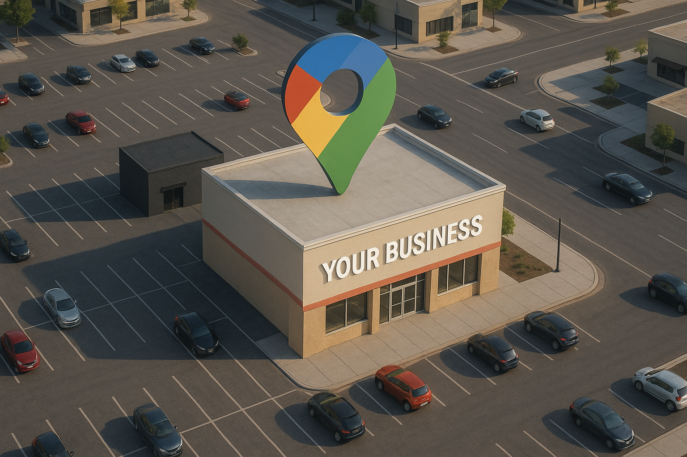

¿Cómo crear un perfil de negocio en Google y aparecer en Google Maps?
Hoy en día, cuando una persona busca un restaurante, abogado, tienda de ropa o cerrajero, lo hace directamente en Google. Si tu negocio no aparece en GOOGLE, estás perdiendo ventas todos los días sin darte cuenta. Crear un perfil de negocio en Google no solo te hace visible, te convierte en una opción real para miles de personas que necesitan lo que tú ofreces.
¿Por qué es tan importante tener tu negocio en Google?
Un perfil de negocio es lo que las personas ven cuando buscan algo como “Restaurante cerca”, “Tienda de ropa en mi zona” o “Cerrajero 24 horas”. Google les muestra una lista con los negocios más relevantes y mejor optimizados… ¿Tu negocio está ahí? Si no lo está, no existes (al menos para ellos).
Crear un perfil de negocio en Google parece fácil… pero no lo es
Aunque cualquiera puede crear su cuenta gratis en Google Business Profile, lo que la mayoría no sabe es que crear el perfil no garantiza que Google te recomiende. Tu perfil puede quedar escondido entre cientos si no lo configuras correctamente. Google premia a los negocios optimizados, no solo a los que existen.
Los 5 pasos para crear tu negocio en Google y no quedar invisible
1. Crea tu cuenta en Google Business Profile
Ingresa a google.com/business y registra tu empresa. Agrega el nombre, dirección, número, categoría y una descripción con las palabras clave que tus clientes usarían para encontrarte.
2. Verifica tu perfil (sin esto, no apareces)
Google te pedirá que verifiques que ese negocio es tuyo. Puede ser por correo físico, llamada, email o video. Si no completas esta verificación, tu negocio no podrá aparecer en Google Maps.
3. Sube fotos reales, actuales y profesionales
Los perfiles con imágenes bien optimizadas reciben hasta 3 veces más clics. Agrega fotos del lugar, productos, personal, horarios o ejemplos de tu trabajo si eres prestador de servicios.
4. Pide reseñas a tus primeros clientes
Una cuenta sin reseñas parece abandonada. Las reseñas generan confianza inmediata. Google también toma en cuenta cuántas tienes para decidir si te muestra entre los primeros lugares.
5. Optimiza tu perfil y mantenlo activo
Agrega publicaciones, responde reseñas, activa tu chat y mantén la información actualizada. Esto le indica a Google que tu negocio está vivo y debe ser recomendado.
¿Por qué Google no muestra tu negocio si ya creaste el perfil?
Porque muchos crean el perfil y lo dejan a medias:
- No completan toda la información
- No usan palabras clave relevantes
- No eligen la categoría adecuada
- No tienen reseñas ni fotos
- No publican actualizaciones
Por eso, tu competencia aparece y tú no, aunque tú seas mejor.
¿Quieres evitarte todos estos errores y aparecer entre los primeros?
Nosotros te ayudamos a:
- Crear y optimizar tu perfil profesionalmente
- Configurar tu ficha de Google Maps correctamente
- Posicionar tu negocio en las primeras posiciones de búsqueda
Y lo mejor: lo hacemos por menos de 50 USD.
¿Tu negocio ya aparece en Google? Lo revisamos GRATIS
Escríbenos ahora, uno de nuestros expertos revisará gratis tu perfil actual y te dirá:
- ✔️ Qué estás haciendo bien
- ❌ Qué te está afectando en tu posicionamiento
- 🔧 Qué puedes mejorar ya mismo
Conclusión: Cada día que no apareces, estás perdiendo clientes
Aparecer en Google ya no es opcional. Es una necesidad. Si aún no tienes tu perfil o si lo tienes pero no sabes si está bien posicionado, hoy es el momento de actuar. No pierdas más tiempo ni clientes. Nosotros te ayudamos.
📲 ¡Quiero ser visible en Google!
Escríbenos ahora y recibe tu diagnóstico GRATUITO.
¡QUIERO MI DIAGNÓSTICO!
La inversión es mínima y los beneficios son muy grandes.
Escríbenos sin compromiso, nosotros te asesoramos.